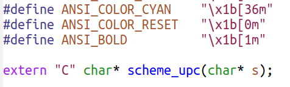
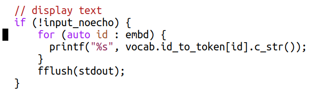
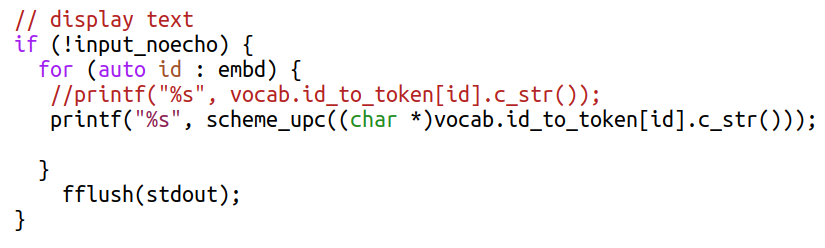
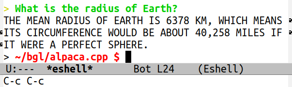

Exploring and Harnessing the Power of a Local Large Language Model (LLM)
Introduction
Welcome to our tutorial on installing, running, and exploring the
capabilities of a local Large Language Model (LLM). In this tutorial,
we will guide you through the process of setting up a state-of-the-art
LLM on your personal computer. You will learn how to programmatically
interact with the model, accessing both user questions and
model-generated answers.
By the end of this tutorial, you will not only be able to send
questions to the LLM and retrieve answers but also possess the skills
to enhance and refine user queries programmatically. This will allow
you to improve the conciseness, focus, and analytical potential of the
LLM responses. Furthermore, you will be able to use that skill to
extract numerical data and keywords from the model’s answers, enabling
further analysis.
Are you ready to dive into the world of local LLMs? Let’s get started on this exciting journey!
Why
The question “Why should one bother running a local LLM?” is worth pondering. When posed with this question, ChatGPT provided the response below. We have emphasized item 1 as it closely aligns with the central focus of our tutorial.
“Running a local Language Model (LLM) instead of using ChatGPT, like the one I am based on, may have certain advantages and use cases:
Customization and Adaptability: With a local LLM, you have the flexibility to customize and adapt the model according to your specific needs. You can fine-tune the model using your own data or modify it to suit particular requirements, ensuring it aligns closely with your use case.
Privacy and Security: By running a local LLM, you have more control over your data and can ensure its privacy and security. Since all computations are performed locally, sensitive information or proprietary data can remain within your infrastructure.
Offline Access: A local LLM allows you to have continuous access to language processing capabilities even without an internet connection. This can be valuable in scenarios where internet access is limited, unreliable, or unavailable.
Latency and Response Time: Running a local LLM can potentially offer faster response times as there is no dependency on network connectivity or external servers. This can be beneficial in time-critical applications or real-time interactions where low latency is crucial.
Compliance and Regulatory Requirements: Some industries or organizations may have strict compliance or regulatory requirements that govern data storage, processing, or access. Running a local LLM allows for greater control over data management, facilitating adherence to such requirements.”
That being said, it’s crucial to acknowledge that running a local LLM
does present challenges, notably the requirement for substantial
computational resources. Even when implemented in Common Lisp or using
the GNU Compiler Collection (GCC), Large Language Models tend to
exhibit slow performance. Ideally, hardware implementation should be
considered, or alternatively, utilizing GPUs or other massively
parallel processing systems. Nevertheless, in this tutorial, we will
explore the utilization of GCC and the Bigloo Scheme language as our
chosen tools. Both are renowned for their flexibility, robustness, and
efficiency.
What
The question of “What materials do I need to refine the answers a LLM
and run it on my personal computer?” is another important aspect to
address before we proceed with the installation and execution of a
local LLM.
In this tutorial, we will utilize the following materials:
Alpaca: It is an instruction-following language model developed at Stanford University which is fine-tuned from Meta’s LLaMA 7B model. We will show you how to install Alpaca and use it.
Linux or Mac: we assume you are using one of these operating systems.
GCC (Gnu Compiler Collection): We will GCC to compile Bigloo and its libraries.
Bigloo Scheme: Bigloo is a Scheme implementation that offers excellent performance. We will be using it as our programming language of choice for this tutorial.
Pretrained LLM model: You will need a pretrained LLM model, which we will discuss how to obtain later in the tutorial.
Optional: GPU or cloud resources: While not strictly necessary, having a GPU or access to cloud resources can significantly speed up the execution of LLMs.
How
Having understood the value of running a local LLM and the necessary
materials for the task, let’s delve into the process of installing and
running a local LLM. Additionally, we will explore how to
programmatically intervene in user queries and the corresponding
responses provided by the model.
Installing Alpaca
Assuming that all of you are using Linux , the process is
straightforward. You just need to clone the system. To facilitate
this, I have already created an LLM directory at the root. Now,
let’s proceed with the following step-by-step commands:
Now, let’s locate a database to provide data for the system. You
can download the required database from the following link:
https://huggingface.co/Sosaka/Alpaca-native-4bit-ggml/tree/main
Download the ggml-alpaca-7b-q4.bin file and place it inside the
~/LLM/alpaca.cpp directory. To do so, click on the downward arrow
icon, as illustrated in the figure below.
On my machine, the file is located in the ~/Downloads/ directory. Let’s move it to the directory where the chat application is located. Once we have completed the transfer, we can proceed to test the program.
~/LLM/alpaca.cpp$ mv ~/Downloads/ggml-alpaca-7b-q4.bin .
~/LLM/alpaca.cpp$ ./chat -m ./ggml-alpaca-7b-q4.bin
== Running in chat mode. ==
- Press Ctrl+C to interject at any time.
- Press Return to return control to LLaMA.
- If you want to submit another line, end your input in '\'.
> I am a physician. Give a few suggestions on how to treat melanoma.
1. Surgery - The most common treatment for melanoma is surgical removal of the tumor
and surrounding tissue, as well as possible lymph node dissection depending upon the
stage of disease.
2. Chemotherapy – In cases where there’s a high risk of metastasis or recurrence, chemo
may be used in combination with surgery to improve survival rates.
3. Immunotherapies - These treatments work by boosting and harnessing the body's own
immune system to fight cancer cells more effectively.
4. Targeted Therapy – This type of treatment targets specific mutations or proteins
expressed in melanoma, helping to block their growth and spread.
>
An Experiment: calling a Bigloo Scheme function from C
Our ultimate goal is to write functions in Scheme, export them to C++ and gcc, and utilize string transformations to refine Alpaca’s responses to align with our specific requirements.
To learn how we can call Scheme from C, let’s do the following experiment:
Execute the commands mentioned below in the given order: tar xfvz, ./configure, make, and finally, sudo make install.
~$ mkdir bgl
~$ cd bgl
~/bgl$ cp ../src/bigloo-latest.tar.gz .
~/bgl$ tar xfvz bigloo-latest.tar.gz
~/bgl/bigloo-latest$ ./configure
~/bgl/bigloo-latest$ make
~/bgl/bigloo-latest$ sudo make install
~/bgl/bigloo-latest$ cd ..
~/bgl$ mkdir cinterop
~/bgl$ cd cinterop
~/bgl/cinterop$ emacs -nw bfib.scm
Type the following program in the Emacs buffer then save it.
;; File: bfib.scm;; Compile with the following lines:;; gcc cfib.c -c;; bigloo -copt "-DBIGLOO_MAIN=initbigloo" cfib.o bfib.scm -o bf.x
(module example
(export (fib::long ::long))
(export (upc::string ::string))
(extern (export upc "scheme_upc"))
(extern (export fib "scheme_fib")))
(define (upc s)
(string-upcase s))
(define (fib x)
(if (< x 2)
1
(+ (fib (- x 1)) (fib (- x 2)))))
The upc function has particular significance for our goal. As it
performs string transformations, it constitutes a proof of concept
that we could ultimately enhance and customize Alpaca’s responses
to suit our specific needs.
Let’s now write the C program. Type the command below on a shell to open emacs:
~/bgl/cinterop$ emacs -nw cfib.c
Type the following program in the emacs buffer then save it.
As you saw in the experiment above, if you are proficient in programming and using GCC’s compilers to translate code into executable programs, then you have the ability to build hybrid programs. A competent programmer is unhesitant about combining languages, provided that both languages exhibit speed and efficiency. While a skilled programmer could write an LLM using Bigloo or Common Lisp, it would require a minimum of one year. However, thanks to the efforts of Meta and Stanford, they have already undertaken this task for us by providing us with their C++ code. Hence, we can readily utilize their code for our purposes. Let’s start by cloning Alpaca’s source code.
Type the commands below
~/bgl/cinterop$ cd ..
~/bgl$ ls
bigloo-latest bigloo-latest.tar.gz cinterop
~/bgl$ git clone https://github.com/antimatter15/alpaca.cpp
Cloning into 'alpaca.cpp'...
~/bgl$ cd alpaca.cpp/
~/bgl/alpaca.cpp$
Next, let’s write a Bigloo Scheme program that defines and exports function upc. This time, let’s save the program file in Alpaca’s directory.
Alright, let’s proceed with a modification in the Makefile to utilize the default gcc compiler, the same gcc compiler that you used to compile Bigloo. We want to ensure compatibility and avoid any potential issues. Open the Makefile in Emacs and search for the the lines below
At this point, we are going to undertake a delicate operation, which involves wrapping the output of Alpaca with a string-to-string transformation function in Bigloo. Let’s proceed with editing the chat.cpp function.
Add the prototype for the Scheme function we wrote to the chat.cpp program

To facilitate the Ctrl-C/Ctrl-V, we provide the source code below
extern"C"char* scheme_upc(char* s);
Perform a search for ’display text’ to locate the following block of code.

Apply function schemeupc to the string generated by the LLM. The block should be updated as follows:

To facilitate Ctrl-C/Ctrl-V, here is the text from the block:
The compilation option -DBIGLOO_MAIN=bigm prevents Bigloo from generating a main function since we already have a main definition in C. As Bigloo requires an initialization function, we recommend naming it bigm, although you can choose any other appropriate name.
Finally, let’s test it.
~/bgl/alpaca.cpp$ ./bchat

We conducted the test in Emacs’ eshell. As you can observe, the function defined in Bigloo successfully converted all the letters to uppercase. This showcases the capability of writing intricate programs to manipulate text as needed.
Voilà! From this point onwards, you have the capability to introduce restricted Artificial Intelligence into any LLM.